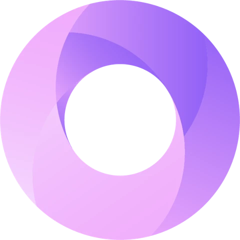

01
Fotografía por incorporar
Perfil por incorporar
Coordinación integral
Visión del conjuntoUn solo partner.
Todo tu ecosistema digital.
Conectamos estrategia, marca y crecimiento para que cada parte avance en una misma dirección.
Agendar una reuniónRedes, campañas, web y ventas pueden funcionar por separado. Cuando cada parte sigue su propia dirección, tu empresa termina coordinándolo todo.
Distintos objetivos.
La coordinación recae en tu negocio.

Un objetivo común.
Un equipo que mantiene la visión del conjunto.
Cinco dimensiones conectadas. Lo que aprendemos en una ajusta las decisiones del conjunto.

Tu negocioEL CENTRO DE LAS DECISIONESConocemos tu negocio, tu audiencia y tu recorrido de compra. Definimos objetivos, prioridades y una hoja de ruta compartida.
La estrategia orienta la marca, los canales y las campañas. El feedback comercial vuelve a ajustar las prioridades.
No es una secuencia rígida. Es un sistema que observa, aprende y se ajusta.
El alcance se diseña según tu punto de partida y tus objetivos. Estas son las áreas que podemos conectar.
Diagnóstico, audiencia, propuesta de valor y recorrido de compra. Una dirección compartida antes de activar los canales.
Conecta con: identidad, plataformas y objetivos de campañas.
Posicionamiento, mensajes, universo visual y recursos de comunicación. Fortalecemos la marca existente o revisamos su identidad cuando necesita una transformación.
Conecta con: contenido, web y creatividad publicitaria.
Redes sociales, web, ecommerce y Tiendanube. Contenido, fotografía, video y cobertura de eventos. Integraciones y automatizaciones según el alcance acordado.
Conecta con: identidad, tráfico y recorrido de compra.
Meta Ads, Google Ads, adquisición y generación de demanda. Campañas y lanzamientos que consideran tanto el objetivo como la experiencia a la que llega el usuario.
Conecta con: contenido, plataformas y oportunidades comerciales.
Diseñamos el recorrido para calificar y derivar oportunidades al WhatsApp, al equipo comercial o a la web de tu empresa, con criterios acordados y la información relevante.
Cuando interviene tu equipo, la atención y el cierre de la venta quedan a su cargo. Compartir ese feedback permite mejorar el sistema.
Conecta con: campañas, experiencia digital y aprendizaje estratégico.
Un referente de coordinación. Especialistas con información compartida. Una hoja de ruta que te permite saber qué hacemos, por qué y quién se ocupa.
Dirección y gestión mensual de las áreas acordadas. Los lanzamientos, eventos y producciones especiales se cotizan por alcance y se integran al sistema.
Escuchamos qué hace tu empresa y qué quiere conseguir.
Revisamos identidad, canales y recorrido para detectar fricciones.
Definimos prioridades, alcance, responsables y aprobaciones.
Alineamos marca, contenido, plataformas y campañas.
Ejecutamos con coordinación y seguimiento continuo.
Revisamos resultados y feedback para ajustar las decisiones.
Próximamente, las empresas que nos acompañan. Los espacios de abajo están reservados para sus logos.
La coordinación mantiene la dirección del conjunto. Cada especialidad trabaja sobre los mismos objetivos y criterios de marca.
Estamos preparando la presentación del equipo. Estos perfiles son espacios reservados, no integrantes publicados.
Fotografía por incorporar
Coordinación integral
Visión del conjuntoFotografía por incorporar
Marca y contenido
Identidad y comunicaciónFotografía por incorporar
Presencia y crecimiento
Canales y oportunidadesContanos dónde está tu empresa
y hacia dónde quiere avanzar.